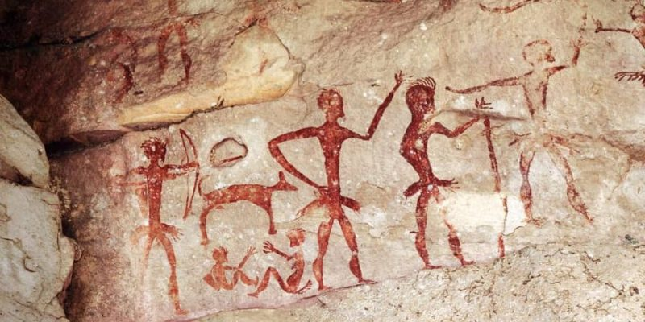
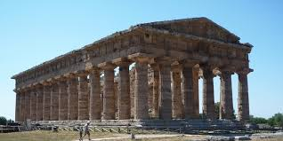

¿Qué es arte?
Es la manifestación o expresión de cualquier actividad creativa y estética por parte de los seres humanos, donde se plasman sus emociones, sentimientos y percepciones sobre su entorno, sus vivencias o aquello que imagina sobre la realidad con fines estéticos y simbólicos. Para ello, utiliza diferentes recursos plásticos, lingüísticos o sonoros con determinados criterios, reglas y técnicas.
Estas son algunas definiciones entregadas por grandes referentes del arte, filósofos e historiadores:

Historia del arte
La historiografía del arte, como disciplina académica y entorno institucional (museos, mercado del arte, departamentos universitarios, producciones editoriales) se suele restringir a las denominadas artes visuales o plásticas (esencialmente a pintura, escultura y arquitectura), mientras que otras artes son más específicamente objeto de estudio de otras disciplinas claramente delimitadas, como la historia de la literatura o la historia de la música, siendo todas ellas objeto de atención por la denominada historia de la cultura o historia cultural, junto con las historias sectoriales enfocadas a otras manifestaciones del pensamiento, como la historia de la ciencia, la historia de la filosofía o la historia de las religiones. Algunos campos de conocimiento estrechamente relacionados con la historia del arte son la estética y la teoría del arte.
La historia del arte es el estudio de la evolución de las expresiones artísticas a lo largo del tiempo y en diferentes culturas. Comprende la pintura, la escultura, la arquitectura y otras formas de arte, así como su relación con la historia social, política y cultural.
Etapas y periodos:
La historia del arte se divide generalmente en periodos, que a veces se superponen y son difíciles de delimitar estrictamente:
Se denomina así a las creaciones artísticas de la primera etapa de la historia, iniciadas con la invención de la escritura, destacando las grandes civilizaciones del Próximo Oriente: Egipto y Mesopotamia. También englobaría las primeras manifestaciones artísticas de la mayoría de pueblos y civilizaciones de todos los continentes. En esta época aparecieron las primeras grandes ciudades, principalmente en cuatro zonas delimitadas por grandes ríos: el Nilo, el Tigris y el Éufrates, el Indo y el río Amarillo. Uno de los grandes avances en esta época fue la invención de la escritura, generada en primer lugar por la necesidad de llevar registros de índole económica y comercial. El primer código escrito fue la escritura cuneiforme, surgida en Mesopotamia alrededor del 3500 a. C., practicada en tablillas de arcilla. Estaba basada en elementos pictográficos e ideográficos, mientras que más adelante los sumerios desarrollaron un anexo silábico para su escritura, reflejando la fonología y la sintaxis del idioma sumerio hablado. En Egipto se desarrolló la escritura jeroglífica, con una primera muestra en la Paleta de Narmer (3100 a. C.). La lengua hebrea fue una de las primeras que utilizó como método de escritura el alfabeto (abyad, alrededor del 1800 a. C.), que relaciona un único símbolo a cada fonema; de aquí derivan los alfabetos griego y latino.
Arte clásicoSe denomina arte clásico al arte desarrollado en las antiguas Grecia y Roma, cuyos adelantos tanto científicos como materiales y de orden estético aportaron a la historia del arte un estilo basado en la naturaleza y en el ser humano, donde preponderaba la armonía y el equilibrio, la racionalidad de las formas y los volúmenes, y un sentido de imitación (mímesis) de la naturaleza que sentaron las bases del arte occidental, de tal forma que la recurrencia a las formas clásicas ha sido constante a lo largo de la historia en la civilización occidental.
Bellas artesLas bellas artes son un conjunto de manifestaciones artísticas creativas y estéticamente valoradas, que históricamente han sido consideradas formas puras de arte, sin un propósito utilitario. Tradicionalmente se considera que las bellas artes son seis:
- Arquitectura
- Escultura
- Pintura
- Música
- Danza
- Declamación (que incluye la poesía)
- En la actualidad, el cine se considera el séptimo arte.
Origen del arte
Las primeras manifestaciones artísticas del ser humano datan de la prehistoria. Las pinturas rupestres más antiguas halladas hasta la fecha tienen cerca de 70.000 años. Se atribuyen a grupos de neandertales, quienes decoraban el interior de las cavernas que habitaban con mezclas de pigmentos y grasa animal. Esas primeras formas de arte rupestre eran dibujos de animales totémicos, escenas de cacería o impresiones de manos, realizadas probablemente con fines narrativos, chamánicos o rituales. Sin embargo, el concepto de arte tal como se lo entiende hoy en día surgió en la Antigua Grecia, donde se produjeron textos teóricos y críticos al respecto. Entre ellos, se destacan la Poética de Aristóteles y Los tratados o Moralia, de Plutarco. Se utilizaban pigmentos naturales, como la arcilla y el óxido, para realizar dibujos sobre la piedra de las cuevas. En ellos, los humanos prehistóricos representaron su estilo de vida y su medio. Pintaron animales (leones, hienas, caballos y rinocerontes) y escenas de caza. Existen pinturas rupestres en los cinco continentes, y estas primeras representaciones artísticas formaron parte de lo que se denomina arte prehistórico.
Características
Son expresiones creativas a través de las cuales los artistas comunican sus ideas, emociones y visiones del mundo. Estas pueden manifestarse en diversas formas, como pintura, música, literatura, danza, teatro, escultura, arquitectura, cine, entre otras.
Una forma excepcional de expresar emociones, contar historias, comunicar ideas y desafiar las normas. A través de diversos medios artísticos, el arte se convierte en un puente entre los artistas y el mundo, conecta a las personas a través de la emoción y la reflexión.
Son conceptos interrelacionados que impulsan la evolución y el progreso. La creatividad es la capacidad de generar ideas originales, la originalidad se refiere a la novedad y unicità de una obra, y la innovación es la aplicación de estas ideas para crear algo nuevo o mejorado.
Se refiere a cualquier obra de arte que transmite una sensación de movimiento, acción o energía. Esto puede lograrse a través de diferentes técnicas, como la composición, la forma, el color y la utilización de efectos de iluminación.
Las representaciones artísticas son únicas. Cada cultura traduce, interpreta y representa el mundo según un particular punto de vista, y dentro de cada cultura, cada artista lo hace a su modo.
El concepto de arte varia contantemente de acuerdo a la época y lugar, lo que dificulta hacer una definición universal y atemporal, concreta, realista y verdadera.
Se refiere a las expresiones artísticas que reflejan los valores, creencias, tradiciones y la historia de una cultura específica. A través de la pintura, escultura, música, danza, teatro, literatura, entre otras formas de arte, las comunidades expresan su identidad y transmiten su legado a futuras generaciones.
Se refiere a la idea de que el arte, al ser creado, ya tiene una función o propósito intrínsecamente ligado a su existencia, independientemente de cualquier otro valor o función que pueda adquirir en un contexto social o cultural.
Los 20 tipos de artes que existen
- Pintura
- Dibujo
- Grabado
- Escultura
- Arte del vidrio
- Orfebrería
- Ebanistería
- Cerámica
- Arquitectura
- Literatura
- Música
- Teatro
- Danza
- Artes circenses
- Fotografía
- Cine
- Historietas
- Diseño gráfico o comunicación visual
- Diseño industrial
- Diseño de modas
Es el arte de realizar imágenes con pigmentos de color sobre superficies bidimensionales. Por ejemplo, la pintura sobre lienzo o la pintura mural. Se divide en dos grandes tipos: la pintura figurativa y la pintura no figurativa o abstracta. Forma parte de las bellas artes. Se puede ejecutar sobre gran variedad de soportes, como piedra, tabla, tela, papel, cerámica, estuco, yeso, vidrio y metales. Asimismo, se expresa en gran diversidad de técnicas como óleo, temple, fresco, témpera, acuarela, cera, pastel, acrílico, aerosol, entre otras.

Es un arte que consiste en el delineado de imágenes con lápiz, carboncillo o tinta sobre superficies bidimensionales. El dibujo puede ser concebido como parte de la pintura. Sin embargo, también puede dar lugar a piezas autónomas. Forma parte de las llamadas artes plásticas o artes visuales.
Es un arte que obtiene estampas a través de la impresión de planchas de madera o metal sobre un soporte. Estas impresiones pueden repetirse muchas veces. Cada repetición tiene pequeñas variaciones y puede ser intervenida. Existen diversas técnicas de grabado, tales como la xilografía, la serigrafía, la litografía, la linografía y la monotipia. Aunque se usa frecuentemente para reproducir imágenes, muchos artistas consideran al grabado como un arte autónomo de la pintura.
Consiste en modelar la materia sólida para construir figuras de tres dimensiones. Las técnicas pueden ser tan variadas como el modelado en mármol o barro, el vaciado en bronce o el ensamblaje. Existen diversos tipos de escultura, tales como el relieve, la escultura en bulto redondo y la escultura cinética. La escultura forma parte de las bellas artes y, como tal, no cumple una función práctica sino estética.
Consiste en el diseño y elaboración de piezas artísticas en este material, desde vitrales hasta piezas escultóricas. No incluye la técnica del vidrio soplado, destinada apenas para la fabricación masiva de objetos utilitarios.
Es el arte del diseño y elaboración de objetos utilitarios y piezas de joyería en metal. Puede practicarse con metales preciosos, como oro, platino y plata, o metales semipreciosos, como el cobre, el hierro, el níquel, el titanio, el zinc, etc. Forma parte de las artes aplicadas. Sin embargo, la orfebrería es también una técnica de la escultura.

Es el arte del diseño y elaboración de muebles y objetos utilitarios de madera. Forma parte de las artes aplicadas. Se diferencia de la carpintería en que esta última se limita a resolver necesidades prácticas. En cambio, la ebanistería tiene como propósito dar valor artístico al mueble u objeto creado. De hecho, en algunos casos la función del objeto pueden verse comprometida.
Es el arte de modelar el barro o la arcilla para crear objetos utilitarios con valores artísticos. Suele clasificarse entre las artes aplicadas. Sin embargo, la cerámica también puede ser una técnica escultórica.
Es un arte que consiste en el diseño, planificación y construcción de espacios físicos. Se considera una de las bellas artes porque el diseño y la función del edificio no se limitan a dar abrigo, sino que resuelven necesidades culturales. Por ejemplo, el diseño de las iglesias y templos simboliza la cultura religiosa de los pueblos.
Es el arte de la expresión por medio de la palabra, ya sea escrita o hablada. Es una de las bellas artes por excelencia. La literatura se expresa en muchas formas y géneros. En la literatura escrita destacan la poesía, la narrativa (novela, cuento, crónica), el ensayo y la dramaturgia. En la literatura oral destacan también las adivinanzas, los trabalenguas, las canciones populares, las leyendas y los mitos.
Es el arte de combinar sonidos y silencios en secuencias de tiempo, para producir estímulos agradables al oído. Es una de las bellas artes. Abarca tanto en la composición como la interpretación por medio de instrumentos, incluyendo la voz. La música dialoga con otras formas artísticas, como las artes escénicas. Algunos ejemplos de ello son la ópera y el ballet, concebidos para ser escenificados por cantantes y bailarines respectivamente.
Es el arte de representar acciones y parlamentos delante del público. Es considerado un género literario también, pues depende de un guion escrito por un dramaturgo. El teatro integra elementos musicales, pictóricos y otras manifestaciones artísticas. Abarca géneros tan distintos como el teatro clásico (tragedia y comedia), el teatro de títeres, el arte del mimo, los musicales, etc.
Es el arte de articular movimientos corporales, casi siempre al ritmo de la música. Las secuencias de la danza se conocen como coreografía. Forma parte de las llamadas artes escénicas. La danza se expresa en formas tan diversas como el ballet, la danza contemporánea, las danzas folclóricas y muchas otras manifestaciones.

Se refieren a las diversas expresiones artísticas que se practican en los circos. Gran parte de las artes circenses se basan en la exhibición de destrezas físicas o habilidades extraordinarias, pero también se exhiben actos de animación. Por ejemplo, acrobacias, malabarismo, arte del clown (payasos), magia, arte del trapecio, funambulismo (arte de caminar sobre la cuerda floja), etc.
Es el arte de obtener imágenes de valor conceptual y estético con la cámara fotográfica. Como otras expresiones de las artes visuales, el fotógrafo aplica criterios de composición visual, como el encuadre, la iluminación, etc. La fotografía admite la intervención y manipulación de la imagen fotográfica. Para ello, puede usar técnicas como la coloración manual, el fotomontaje, entre otras.

Conocido como el séptimo arte, consiste en la proyección de imágenes en movimiento y sonido a través de la pantalla. Por ende, es un arte audiovisual. Dadas sus posibilidades expresivas, suele destinarse a contar historias, ya sean de ficción o documentales. El cine representa la síntesis de las artes, ya que producir una película requiere de la intervención de artistas plásticos, músicos, diseñadores, fotógrafos, guionistas, actores, etc.
Es un arte gráfico-narrativo que cuenta historias mediante secuencias de imágenes fijas, llamadas viñetas. Muchas veces, estas viñetas incluyen globos con diálogos. Algunos ejemplos famosos de historietas son Batman, Superman, Calvin & Hobbes, Mafalda, Condorito, etc.
Consiste en la conceptualización y proyección de objetos de comunicación visual, tales como carteles, logotipos, imagen de marca, paquetería, tipografía, diagramación, ilustraciones para libros, etc. Es una expresión de las artes aplicadas.

Conceptualiza y proyecta objetos utilitarios o maquinarias para darles un valor estético. En este sentido, se considera una de las expresiones concretas de las artes aplicadas.

Conceptualiza y proyecta prendas de vestir. Se considera una actividad artística porque, a diferencia del oficio de corte y confección tradicional, se basa en conceptos culturales y estéticos. Además, exige un alto nivel de confección. Por eso, no es de extrañar que algunas piezas de diseñador exhibidas en pasarelas no estén destinadas al uso.

Fuentes:
https://www.elcorteingles.es/entradas/blog/cuales-son-las-bellas-artes/#:~:text=Desde%20el%20siglo%20XX%2C%20las,manifestaciones%20culturales%20y%20art%C3%ADsticas%20modernas.
https://concepto.de/bellas-artes/#:~:text=las%20bellas%20artes.-,%C2%BFQu%C3%A9%20son%20las%20bellas%20artes?,mismo%2C%20sin%20un%20prop%C3%B3sito%20utilitario.
https://concepto.de/manifestacion-artistica/#:~:text=Las%20manifestaciones%20art%C3%ADsticas%20son%20todas%20las%20formas,teatro%2C%20el%20circo%2C%20la%20danza%2C%20el%20collage.
https://www.twinkl.com.mx/teaching-wiki/arte
https://www.capitaldelarte.com/arte-sus-principales-caracteristicas/
https://www.significados.com/tipos-de-arte/
esta pagina es para pasar mi materia, no con fines de lucro